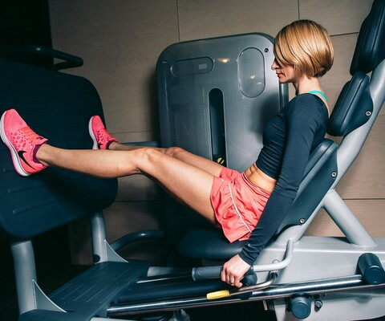

Sport · Bewegung · Bildung · Organisation
Svitlana Karpova
Mehr als 20 Jahre Berufserfahrung in Sport, Bewegung und Training
Ich verbinde langjährige praktische Erfahrung im Sport- und Fitnessbereich mit einer akademischen Ausbildung im Bereich Sporterziehung und Erfahrung in der Leitung eines Sportkomplexes. Meine beruflichen Schwerpunkte umfassen individuelles Training, gesundheitsorientierte Bewegung, Sportpädagogik, die Arbeit mit Menschen und Gruppen sowie die Organisation sportlicher Aktivitäten.
Ich bin offen für neue berufliche Möglichkeiten in Deutschland und möchte meine Erfahrung, meine organisatorischen Fähigkeiten und meine Freude an der Arbeit mit Menschen in einem neuen beruflichen Umfeld einbringen.

Tätigkeitsschwerpunkte
-
Fitness und Personal Training
Individuelle Trainingsplanung und persönliche Begleitung bei der Entwicklung von Fitness, Kraft und Ausdauer.
-
Gesundheitsorientierte Bewegung und körperliche Fitness
Bewegung und Training zur Förderung von Kraft, Ausdauer, Beweglichkeit, Mobilität und Koordination.
-
Sport und Bewegungserziehung
Gestaltung von Bewegungsangeboten und Vermittlung von Freude an Bewegung, auch im pädagogischen Kontext.
-
Arbeit mit Menschen und Gruppen
Individuelle Begleitung, Motivation und Gestaltung von Trainings- und Bewegungsangeboten für unterschiedliche Zielgruppen.
-
Sportmanagement und Organisation sportlicher Aktivitäten
Erfahrung in der Organisation betrieblicher Abläufe, Kundenbetreuung und Leitung eines Sportkomplexes.
Qualifikation auf einen Blick
- Akademische Ausbildung im Bereich Sporterziehung
- ZAB-Zeugnisbewertung vom 11.06.2025
- Mehr als 20 Jahre Berufserfahrung
- Erfahrung in der Leitung eines Sportkomplexes